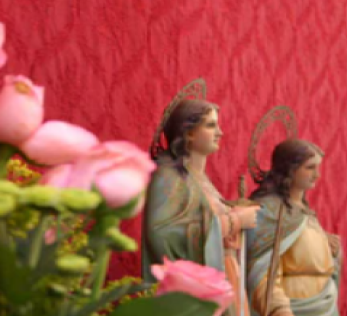
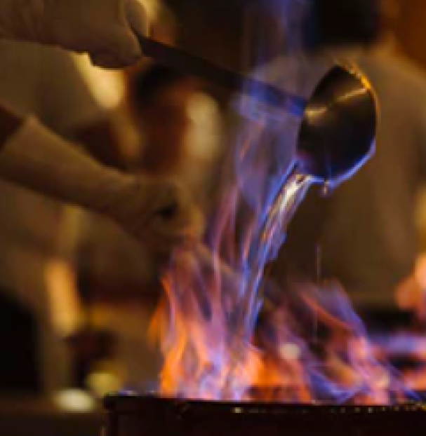
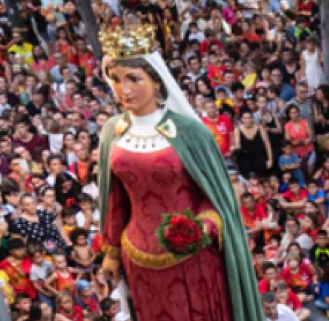
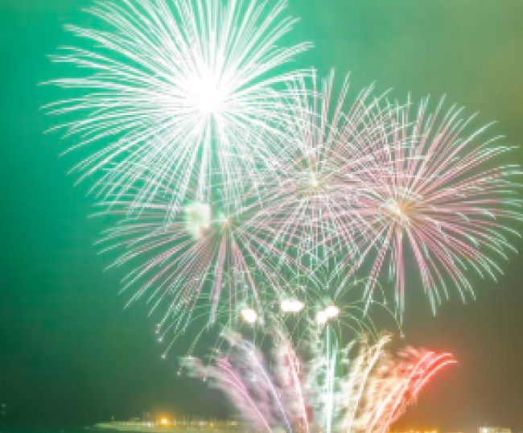
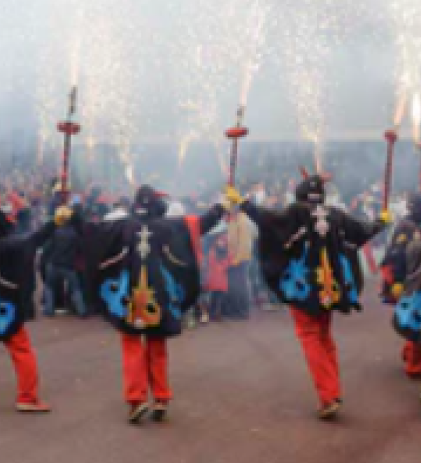
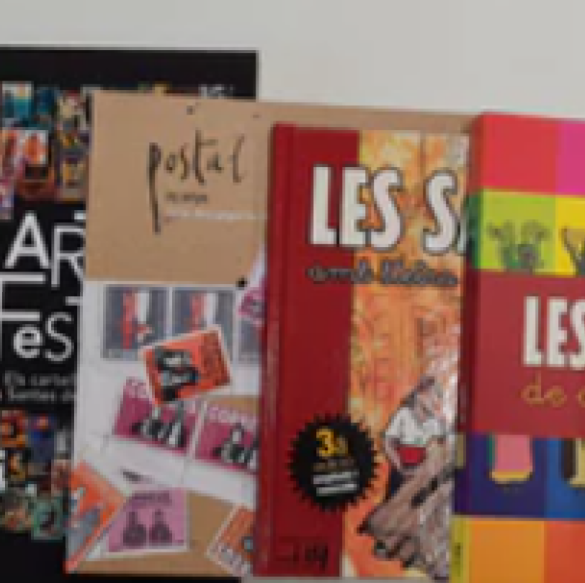

Descobreix l’ànima de la Festa Major de Mataró: des dels balls de gegants fins al foc de la Nit Boja

Les Santes és la festa major de Mataró, dedicada a les seves patrones i declarada Patrimoni Festiu de Catalunya.
MÉS →
El Portal és l'avantsala de la festa, amb actes esportius i culturals des del dia 19, com l'Estrena institucional, la Gegantada, les Havaneres, la Diada Castellera i l'Encesa de diables..
MÉS →
La festa comença el dia 25 amb la Crida, la baixada de gegants i la Nit Boja (correfoc i festa de l'escuma). El dia 26 hi ha la Tarda Guillada infantil i el repic de campanes.
MÉS →
El dia 27 comença amb l'Ofici solemne i acaba amb el castell de focs. El dia 28 hi ha la Trobada de Gegants, el Ball de Dracs i el "No n'hi ha prou!" nocturn.
MÉS →
El Portal és l'avantsala de la festa, amb actes esportius i culturals des del dia 19, com l'Estrena institucional, la Gegantada, les Havaneres, la Diada Castellera i l'Encesa de diables.
MÉS →
Recull de llibres, revistes, articles, discs i jocs sobre la festa major, classificats per adults, infants i música. Treball de recerca de la Biblioteca Pompeu Fabra i Marta Pallarès.
MÉS →